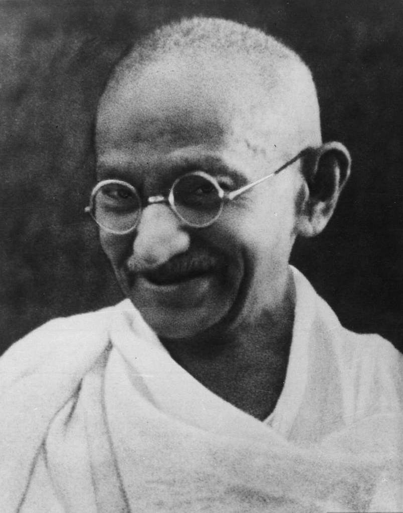
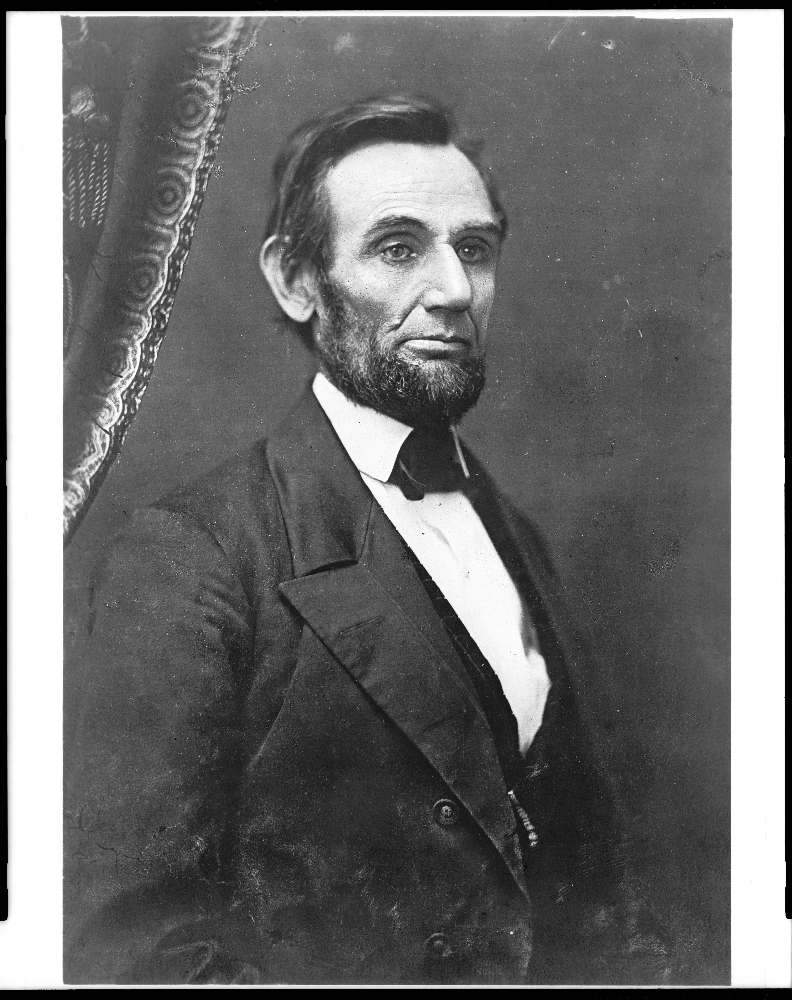
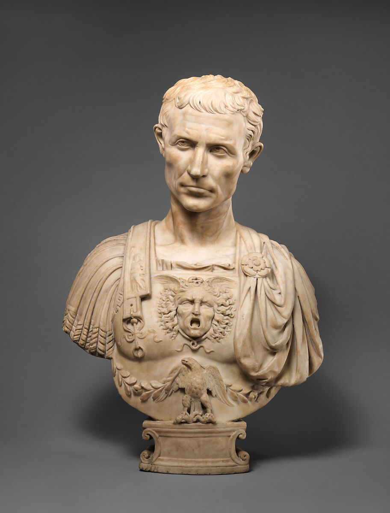
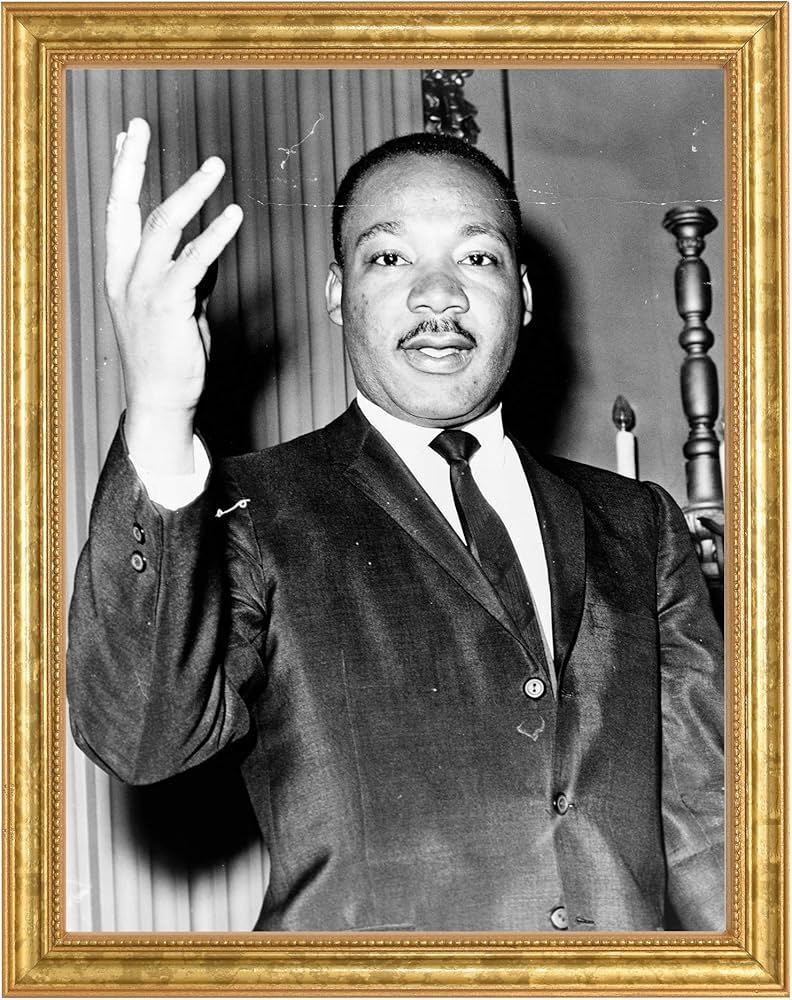
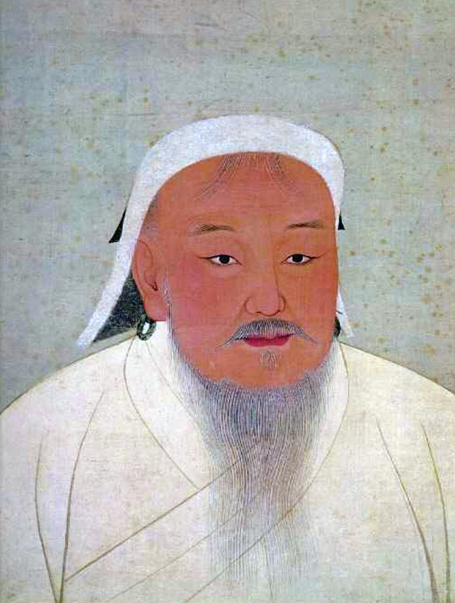

Nelson Mandela was born on July 18, 1918, in Mvezo village, South Africa.
His birth name was Rolihlahla Mandela, meaning “troublemaker.”
He grew up in the Thembu royal family and studied law, becoming one of
the first Black lawyers in South Africa. He witnessed the injustice of
apartheid — a system of racial segregation that denied Black citizens
equal rights.
Fight Against Apartheid
Mandela joined the African National Congress (ANC) to fight for equality.
He organized protests against apartheid laws. After violent government
repression, he helped form a resistance movement. The government later
declared him a criminal for his activism.
27 Years in Prison
In 1962 Mandela was arrested and sentenced to life imprisonment.
He spent 27 years in prison, mostly on Robben Island.
Despite harsh conditions and hard labor, he became a global symbol
of hope, resistance, and courage.
Freedom and Presidency
Mandela was released in 1990. He promoted peace and unity instead
of revenge. In 1994, South Africa held its first democratic election.
Mandela became the first Black president and worked to unite the nation
and end racial discrimination.
Legacy
Mandela served one presidential term and stepped down peacefully.
He received many awards, including the Nobel Peace Prize in 1993.
He died in 2013 but remains a global symbol of justice and forgiveness.
"Education is the most powerful weapon which you can use to change the world."
Queen Elizabeth II
Early Life and Background
Queen Elizabeth II was born on April 21, 1926, in London, England.
Her full name was Elizabeth Alexandra Mary Windsor.
She was not originally expected to become queen, but after her uncle
King Edward VIII abdicated the throne, her father became King George VI,
making Elizabeth the future heir.
Becoming Queen
Elizabeth became queen in 1952 at the age of 25 after her father's death.
Her coronation in 1953 was one of the first major international events
broadcast on television, allowing millions of people around the world
to witness the ceremony.
Longest Reigning British Monarch
Queen Elizabeth II ruled for more than 70 years, making her the longest-reigning
monarch in British history. During her reign, she witnessed major global
changes including technological advancement, political transformation,
and social development across many nations.
Role and Leadership
As a constitutional monarch, the Queen did not make political decisions,
but she served as a symbol of unity, stability, and continuity for the
United Kingdom and the Commonwealth. She carried out thousands of official
duties, met world leaders, and supported many charities and public causes.
Legacy
Queen Elizabeth II passed away on September 8, 2022.
She is remembered for her lifelong dedication to public service,
strong sense of duty, and steady leadership during times of great change.
Her reign remains one of the most historic and influential in modern times.
"I declare before you all that my whole life, whether it be long or short,
shall be devoted to your service."
Napoleon Bonaparte
Born: August 15, 1769 – Ajaccio, Corsica Died: May 5, 1821 – Saint Helena Island Nationality: French Famous For: French Emperor, Military Leader, Reformer
Napoleon Bonaparte was one of history’s greatest military commanders and the Emperor of France.
He rose to power after the French Revolution and became known for his brilliant battlefield
strategies and strong leadership. He created important reforms in government, education,
and law — especially the Napoleonic Code, which influenced legal systems worldwide.
Napoleon built a vast European empire through a series of successful wars. However, his invasion
of Russia in 1812 weakened his army and power. After several defeats, he was exiled to the island
of Saint Helena, where he lived until his death. Today, he is remembered as a powerful leader who
changed Europe’s political and legal systems.

Mahatma Gandhi
Born: October 2, 1869 – Porbandar, India Died: January 30, 1948 – New Delhi, India Nationality: Indian Famous For: Leader of Indian Independence Movement, Nonviolent Resistance
Mahatma Gandhi was a political and spiritual leader who guided India to independence from
British rule through peaceful protest. He believed in nonviolence (Ahimsa) and civil
disobedience as powerful tools for social and political change.
Gandhi organized many historic campaigns, including the Salt March in 1930, which challenged
British laws in India. His philosophy inspired movements for civil rights and freedom across
the world. He is remembered as the “Father of the Nation” in India and one of the greatest
advocates of peace in history.
Abraham Lincoln

Abraham Lincoln was the 16th president of the United States. He led the country
during the Civil War and played a key role in ending slavery. He is remembered
for preserving the nation and promoting equality and freedom for all people.
Julius Caesar

Julius Caesar was a Roman general and statesman who helped transform Rome into a
powerful empire. His military victories expanded Roman territories, and his reforms
changed Roman politics. His growing power led to his assassination by political rivals.
Martin Luther King Jr.

Martin Luther King Jr. was an American civil rights leader who fought against racial
discrimination through peaceful protest. He is famous for his powerful speeches,
including the historic "I Have a Dream" speech that inspired millions to support
equality and justice.
Genghis Khan

Genghis Khan was the founder of the Mongol Empire, the largest land empire in history.
He united Mongol tribes and built a powerful military force that expanded across Asia
and Europe. He is remembered as one of history’s greatest military leaders.